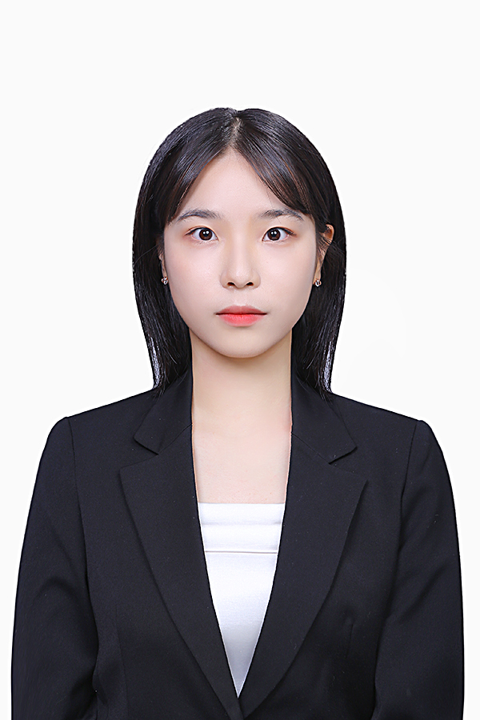

Chae-Eun Kim김채은
Ph.D. Student, Department of Data Engineering
Pukyong National University, Busan, South Korea
Intelligent Geospatial Data Science Lab (iGDSL)
About
I am a Ph.D. student in Data Engineering at Pukyong National University, working in the Intelligent Geospatial Data Science Lab (iGDSL). I received my M.S. degree in Data Engineering from the same university in 2026.
My research focuses on improving the quality of satellite imagery with deep learning — reconstructing spatiotemporal gaps in ocean color products such as GOCI-II chlorophyll-a, enhancing spatial resolution through reference-based super-resolution, and exploring foundation models for remote sensing.
Research Interests
Spatiotemporal Gap-Filling
Recovering missing pixels caused by clouds and sensor limits in satellite products, using partial convolution and attention-based spatiotemporal models.
Super-Resolution
Enhancing the spatial detail of satellite images with adaptive, reference-based super-resolution frameworks.
Foundation Models
Applying large pretrained models to remote sensing tasks for robust, transferable image understanding.
Education
- 2026.03 – Present Ph.D. in Data EngineeringPukyong National University, Busan
- 2024.03 – 2026.02 M.S. in Data EngineeringPukyong National University, Busan
Publications
Journal Articles
Conference Papers
Conference Presentations
- 2026.10Korean Society of Remote Sensing Fall ConferenceBusan, Korea
- 2026.07XXV ISPRS CongressToronto, Canada
- 2026.06Korean Hydrographic Society Spring ConferenceBusan, Korea
- 2025.11GeoAI Data Society Fall ConferenceJeju, Korea
- 2025.10Korean Society of Remote Sensing Fall ConferenceYeosu, Korea
- 2025.08IGARSS 2025Brisbane, Australia
- 2025.05ISRS 2025Incheon, Korea
- 2024.10Korean Society of Remote Sensing Fall ConferenceSeoul, Korea
- 2024.04Korean Association of Geographic Information Studies Spring ConferenceBusan, Korea